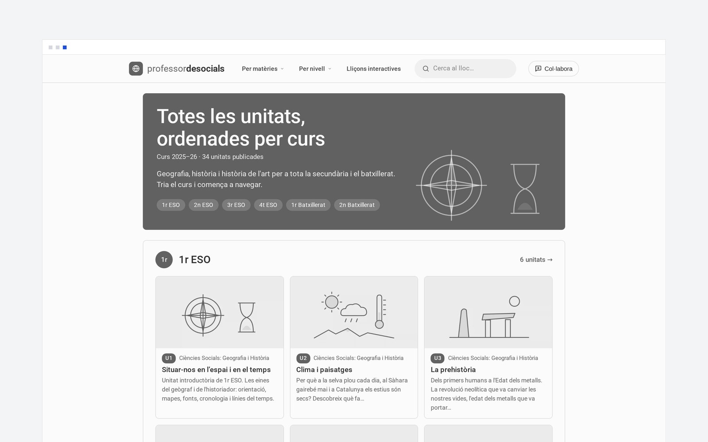

P/01 · en línia
Professor de socials ↗
Material de geografia i història per a secundària i batxillerat, ordenat per cursos. Les unitats es descarreguen en PDF i hi ha un taller per preparar la PAU que corregeix amb IA respostes escrites a mà.
tema propi · plugins a mida · IA integrada